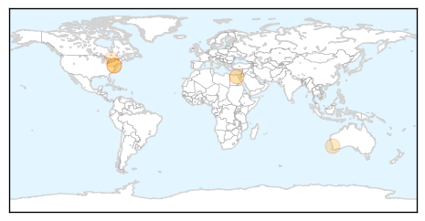
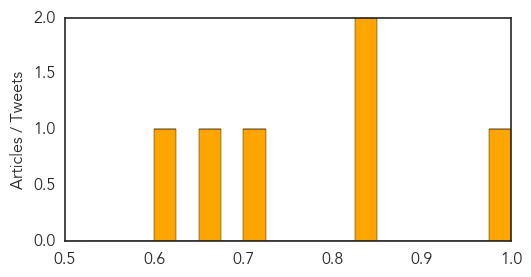

Influenza
30-Day Web Trend
0 alerts, 0 warnings

30-Day Twitter Trend
3 alerts, 0 warnings
Article Locations
Article Confidences
Top Articles:
Top Tweets:
-
No tweets found for Aug 22, 2014
MERS
30-Day Web Trend
0 alerts, 0 warnings

30-Day Twitter Trend
2 alerts, 0 warnings

Article Locations

Article Confidences

Top Articles:
-
No articles found for Aug 22, 2014
Top Tweets:
-
No tweets found for Aug 22, 2014